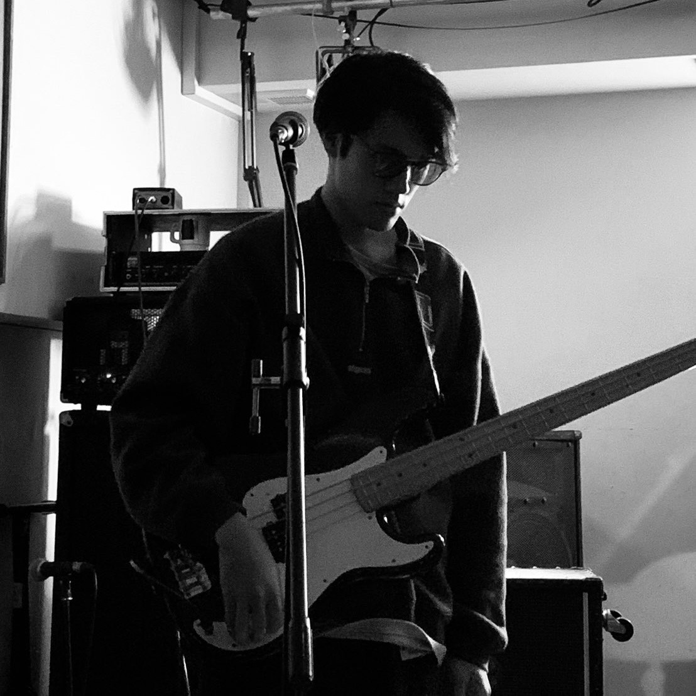
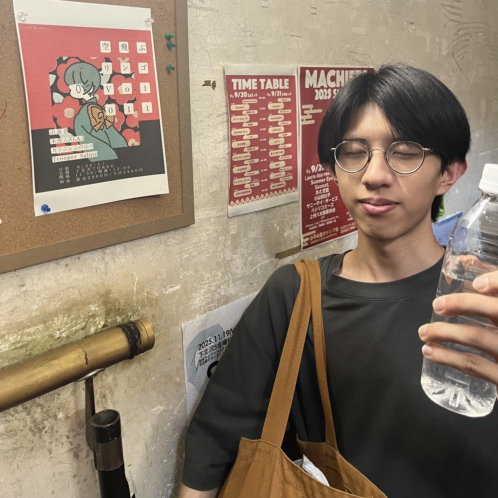
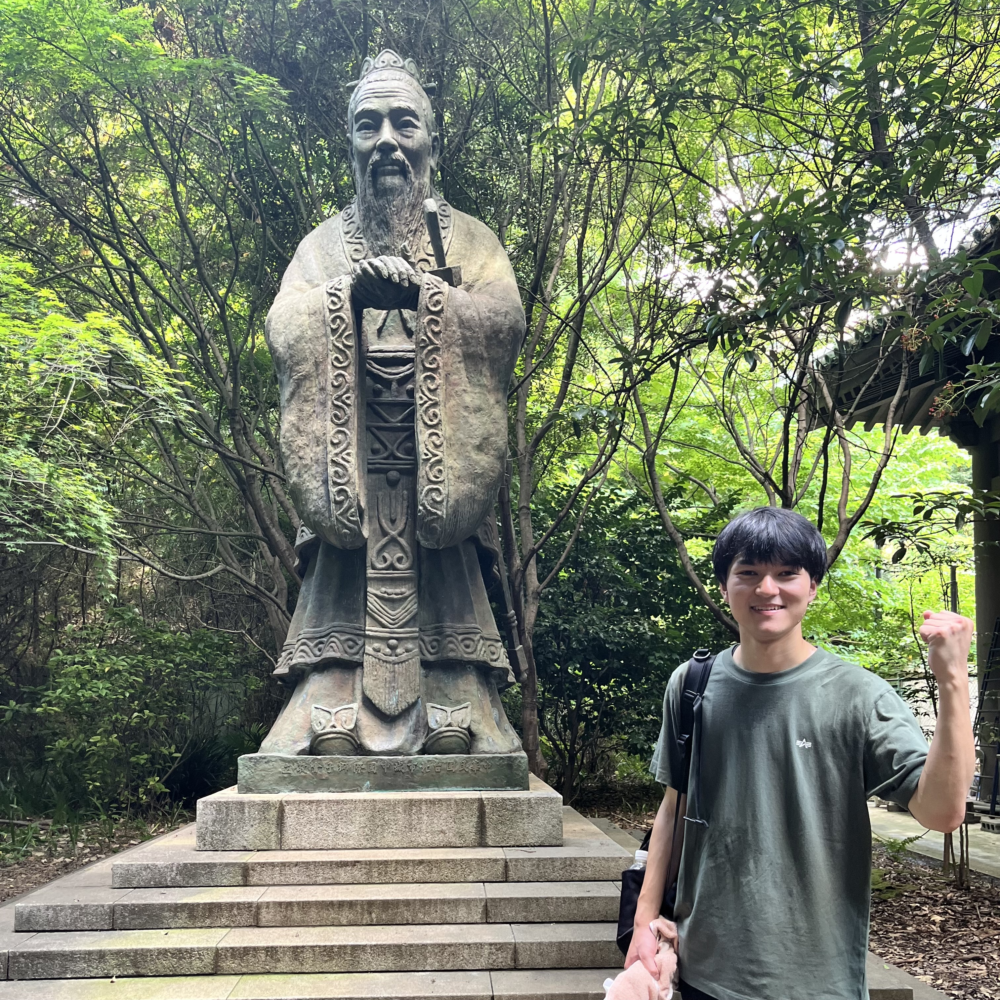
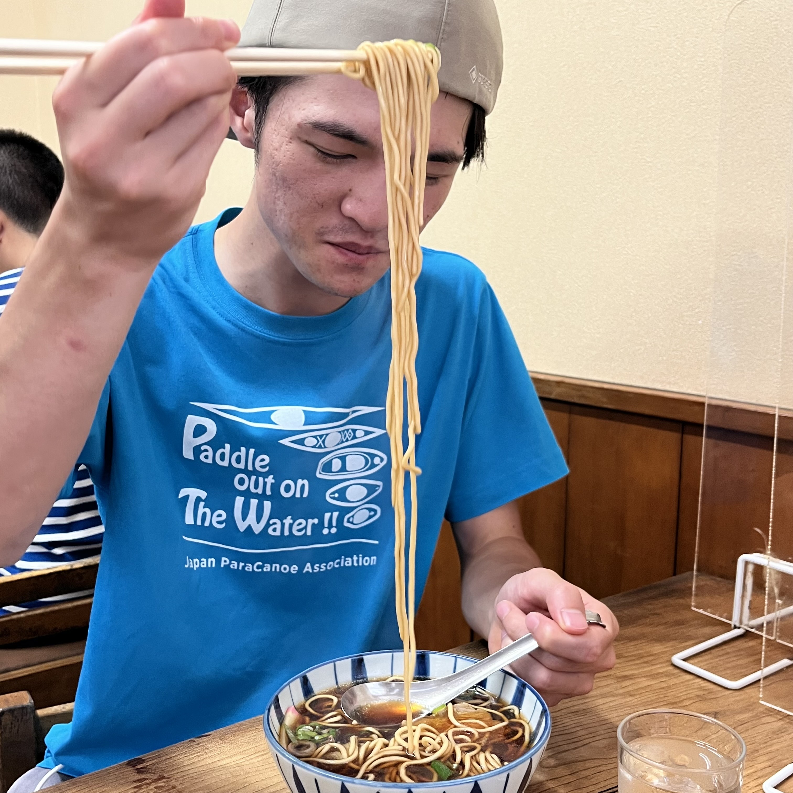
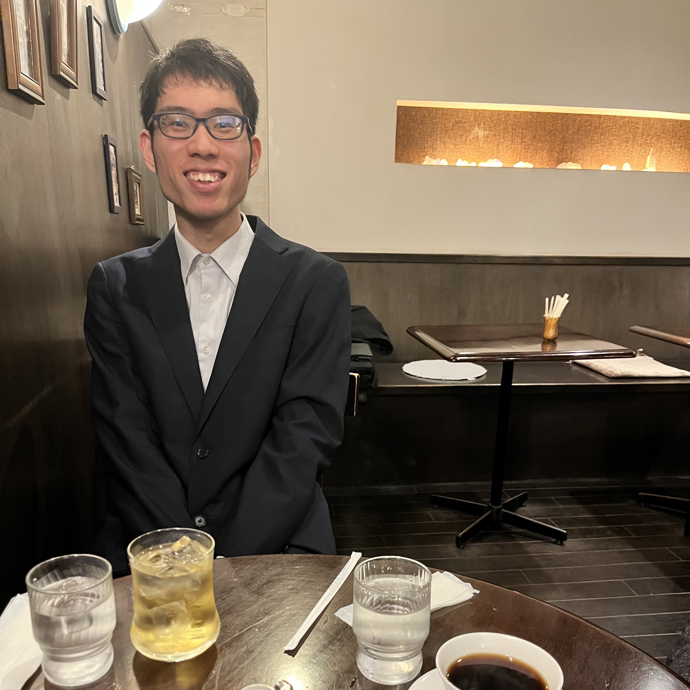

MENU
自己紹介
自己紹介
名古屋・東山を拠点に活動している、5人編成のバンドです。
名古屋大学の軽音サークル「フォークソング同好会(通称：名フォ)」の部員同士で結成しました。2022年10月結成、2023年7月KDハポンでライブハウスデビュー。以降、名古屋市を中心に東京・大阪・京都・岐阜・浜松など各地ライブハウスにて演奏。
1st.EP『東山魚人伝』
昨年2025年5月に1st.EPをリリースしましたので、よければ聴いてください！ボーカル以外一発録りでレコーディングしました。ジャケット画像クリックから、各種サブスク配信ページへ飛べます！

-収録曲-
1. 帽子の女
2. 黒い猫ちゃん
3. お寺
4. 唐鋤
5. もしも
メンバー紹介
①ルイ
ベース担当。幼少期にはTRIX、少年期には米津玄師を聴いて育った。

②セルお
ドラム担当。嵐が好き。

③菊地
ボーカル、ギター担当。東京に行ったときは必ず蒙古タンメン中本を食べる。

④原田
ギター担当。高校から水泳部に入るという異色の経歴。クロールを伸ばした。

⑤ゆっきー
鍵盤担当。サザンと山下達郎が好き。自身のインストバンド『BlueM SpacE』でもコンポーザーとして活躍。
BlueM SpacEの情報はこちらから

ご覧いただきありがとうございました。木魚人は現在、ライブ出演依頼を待っております！
トップページへ戻る